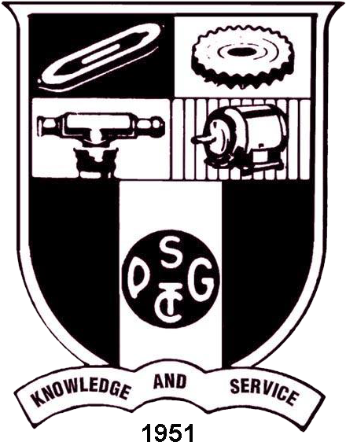
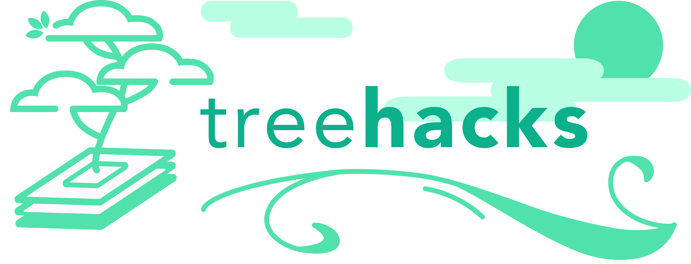
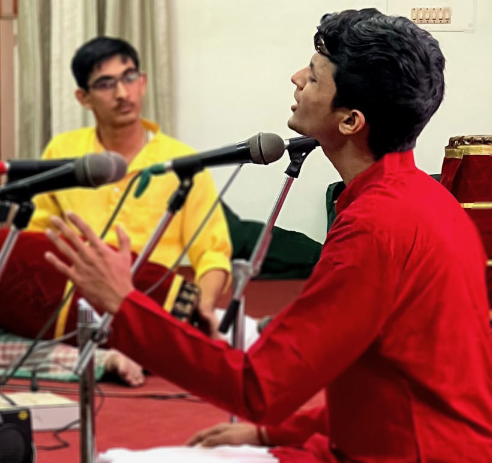
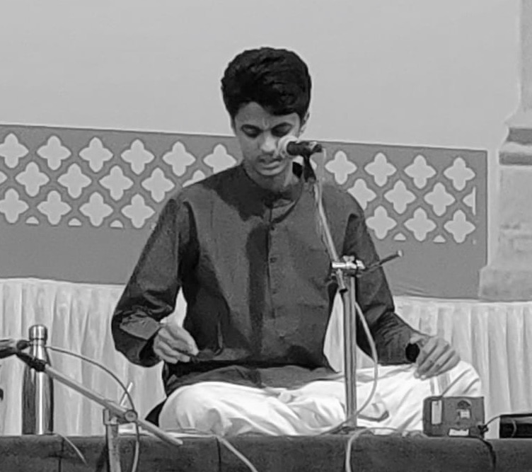

I am a research assistant at IIT Hyderabad supervised by Prof. Vineeth Balasubramanian. I am also an Integrated Master's student at PSG Tech.
I work on developing algorithms that
improve the learning efficiency and adaptiveness of machine learning systems.
My current research interests are in
transfer learning,
particularly in pre-training, meta-learning, multi-task learning,
continual learning and out-of-distribution generalization.
I will be joining ServiceNow Research, Montreal (in-person) as a long-term research intern in Jan 2023 to work with Dr. Alexandre Drouin and Dr. Étienne Marcotte on building efficient transformer-based architectures for time series representation learning.
I am looking for full-time roles in machine learning research starting July-Sep 2023. Please reach out to me if you have an opportunity you think I'd be a good fit for.
Education |
Experience |
|
|  |
|
|
|
Integrated B.Sc-M.Sc., Software Systems PSG Tech, Coimbatore Jun '18 - May '23 (Expected) |
|
| Sep '22 | One paper on out-of-distribution detection submitted to ICLR 2023. This is work in collaboration with folks at ML Collective mentored by Rosanne Liu. |
| Aug '22 | Preliminary work on self-supervised learning objectives for weather time series accepted at the AAAI 2022 Fall Symposium on Climate Change. |
| Jul '22 | ⭐ One paper on Class-Incremental Learning accepted as a full paper at ECCV 2022. |
| Jun '22 | Started as a Research Intern at IBM Research, India. I'll be working on building self-supervised learning objectives and pre-trained models for geospatial weather time series. |
| Jun '22 | ⭐ One paper on cross-task generalization in NLP submitted to EMNLP 2022 (Update: Accepted). |
| Apr '22 | One paper on Class-Incremental Learning accepted at the CLVISION Workshop at CVPR 2022 as a non-archival paper (Update: Accepted at ECCV 2022). |
| Apr '22 | One reproducibility report on Self-Supervision and Few-shot Learning accepted at the ML Reproducibility Challenge 2021 (Fall Edition) and published at ReScience-C. |
| Oct '21 | One paper on out-of-distribution generalization accepted as AAAI 2022 as a student abstract. |
| Jun '21 | Started as a Research Assistant at IIT Hyderabad. Grateful to be working under Prof. Vineeth Balasubramanian. |
TL;DR Abstract Paper arXiv Project Page Code
TL;DR Abstract arXiv Dataset Code
TL;DR Abstract arXiv Project Page Code

Microsoft CodeFundo++ Hackathon 2019-20Regional Runner-up out of 550 teams for project on decentralized blockchain-powered electoral voting system. |

Smart India Hackathon 2020Placed 3rd out of 900 teams for project on real-time road congestion prediction. |

Stanford TreeHacks 2022
|
| Fall 2021 | Deep Learning for Computer Vision, NPTEL (Online Course) | Instructor: Vineeth Balasubramanian | Taken By: 6426 students |
| I am a Carnatic Vocalist and a student of Vidwan Bharat Sundar. I have performed in multiple venues in India. Here is a news article that covered one of my concerts in Coimbatore. Here is a SoundCloud playlist with songs from my performances. |
 |
 |